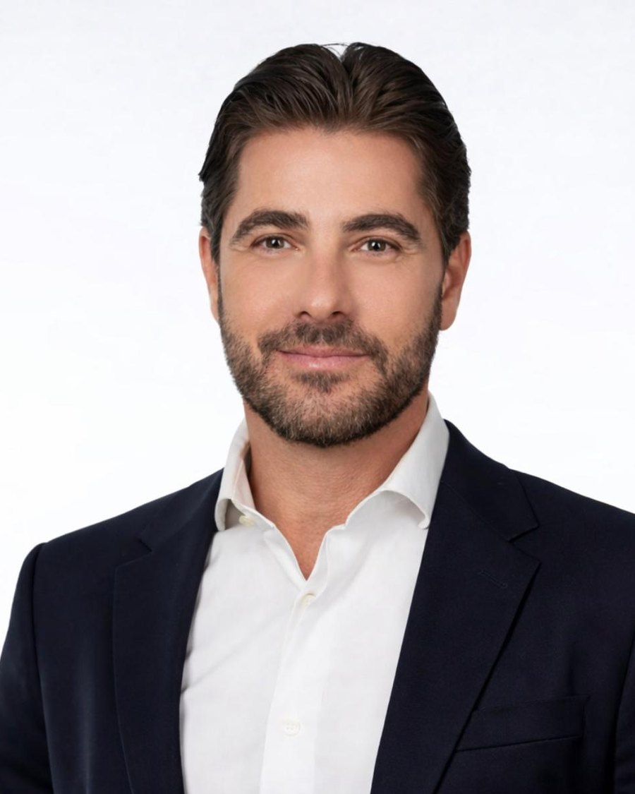
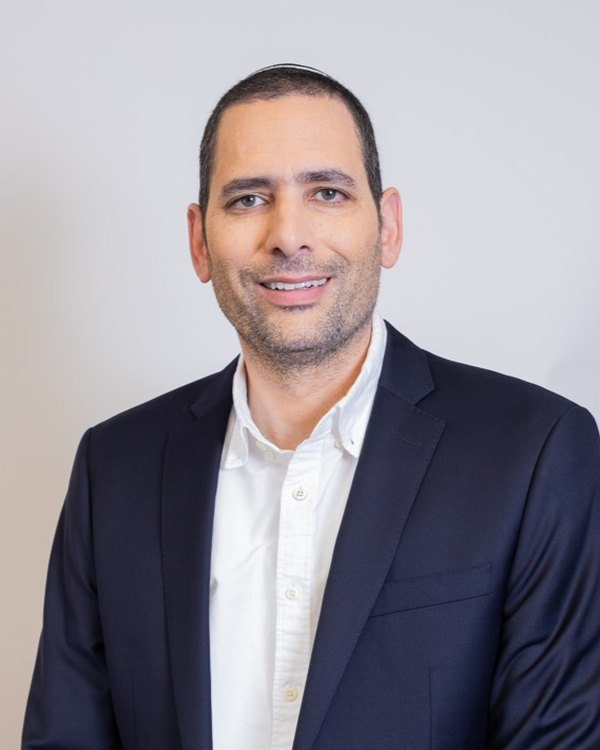
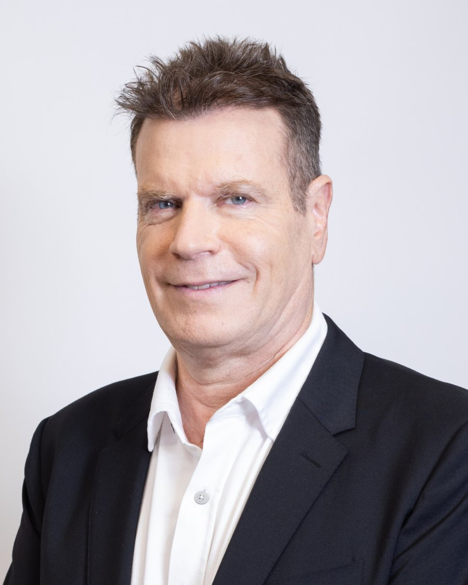
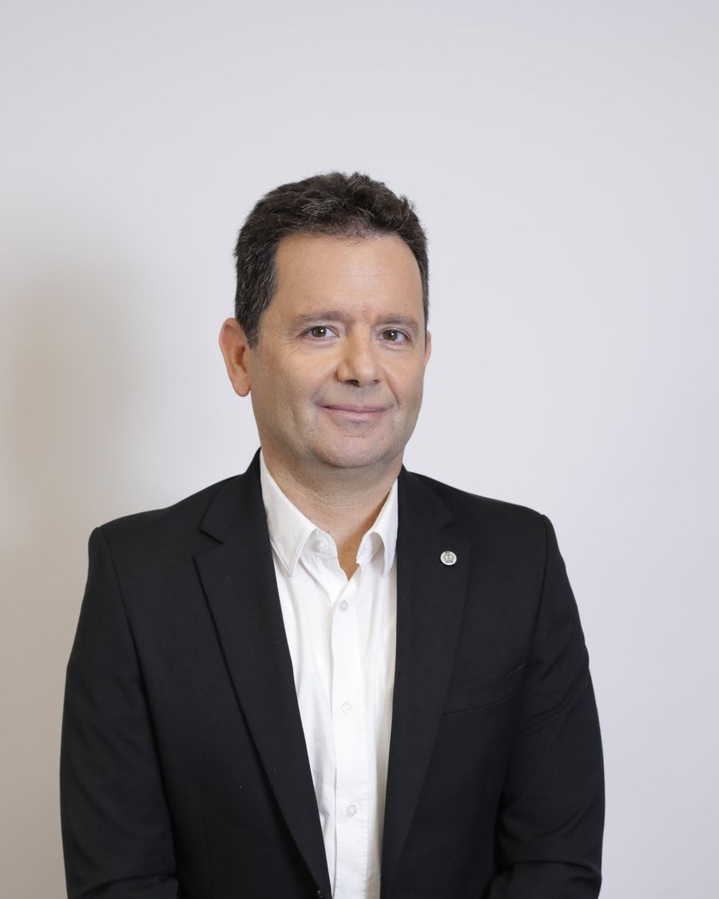

About
UHY Capital was established as a wealth management and Family Office platform providing a comprehensive, integrated framework for high-net-worth families, controlling shareholders and entrepreneurs who qualify as eligible clients under the Regulation of Investment Advice, Investment Marketing and Portfolio Management Law, 1995. The platform is supported by the international UHY network operating in approximately 100 countries.
We provide a holistic service that includes international tax planning, trust structures, investment management, access to alternative investments, family governance, intergenerational planning and transaction advisory. Our operating model enables a consolidated view of the family's assets, financial, business and personal, while developing a long-term strategy for the management and preservation of wealth.
Our activities are conducted on an independent basis, in collaboration with private banks, investment managers, investment funds, legal advisors and international institutions, giving our clients access to sophisticated investment opportunities and tailored financial solutions.
Our Approach
Our approach is centered on designing comprehensive financial architectures tailored to each client's unique needs. We integrate legal, financial and cross-border considerations into a single, coherent framework, guided by a long-term perspective and flexibility. Our engagement is ongoing, ensuring alignment with regulatory, business and family developments over time.
Who We Work With
We work with high-net-worth individuals, families, entrepreneurs, business owners and corporate entities operating locally and internationally. Our clients seek strategic, discreet and long-term advisory, including wealth structuring, risk management and access to sophisticated financial opportunities.
Areas of Expertise
Our expertise spans private wealth architecture, strategic investments and alternative assets, global financial access, corporate transactions and capital advisory, cross-border tax strategy, and risk and protection solutions. These disciplines are integrated into a single comprehensive framework tailored to our clients' financial complexity.
Our Advantage
We combine multidisciplinary expertise with a strategic long-term perspective and complete discretion. Our work focuses on designing sophisticated financial structures while maintaining clarity, control and coordinated oversight across all relevant parties. This approach supports informed decision-making and durable solutions.
Global Reach
Through professional relationships and collaboration with leading financial and legal institutions in Israel and around the world, we provide clients with access to advanced international solutions. This enables cross-border structuring, access to global banking platforms, and the efficient management of assets across multiple jurisdictions.
Executive Management

B.A. Economics & Management
Founding Partner | CEO
Robbie Politzer brings over 20 years of senior management experience across Israel's capital markets, the institutional financial sector and private banking. For the past 17 years he held a series of senior executive positions at Harel Insurance & Finance, where he served as a Group Vice President, member of the Extended Management Team, and Head of the Banks & Institutional Division.
Throughout his tenure he led capital-raising initiatives and large-scale sales and distribution activities, initiated strategic partnerships, and headed Harel's direct business distribution platform for investment products to banks and institutional investors. He also founded and led a Family Office platform focused on developing sophisticated, tailored investment models for qualified clients and wealthy families.
At UHY Capital, Politzer leads the firm's investment strategy and strategic partnerships, identifying investment opportunities, developing relationships with leading financial institutions in Israel and internationally, and tailoring investment solutions for clients with significant wealth.

CPA
Founding Partner | CEO
Moti Shushana is a Certified Public Accountant specializing in Israeli and international taxation, with extensive experience advising high-net-worth families and clients with complex financial needs. His expertise spans ownership structuring, advanced tax solutions, wealth management and intergenerational planning.
In his practice he supports clients in building a complete financial framework that integrates trust structures, domestic and international tax planning, risk management and the long-term preservation of family wealth. He holds a bachelor's degree in Management Accounting and Information Systems from the Lev Academic Center, Jerusalem.

CPA, ADV
Founding Partner
Kobi Shtainmetz is among Israel's most experienced professionals in taxation, financial planning and wealth management for high-net-worth families. Over decades he has advised controlling shareholders, business groups and affluent families at complex financial junctions, structuring ownership arrangements, international tax planning and intergenerational solutions for the preservation, management and orderly transfer of significant wealth.
His management and board experience gives clients a broad perspective connecting tax expertise, business understanding and a regulatory view. He has served as a director and Chairman of the Audit Committee at Bank Mizrahi-Tefahot, as a director at Ofer Investments, and as a member of the Ethics Committee of the Tel Aviv District Bar Association. He is a co-author of the professional compendium on pension taxation and provident funds, one of the leading professional publications in Israel in this field.

CPA, ADV
Founding Partner
Shmulik Hirshfeld is a Certified Public Accountant and Attorney with experience advising clients at the interface of taxation, law, finance and regulation. His experience enables him to provide practical professional counsel on transactions, ownership structures and complex financial processes, tailored to each client's needs and business challenges.
Over the years he has advised non-profit and public-benefit organizations, public and private companies, handling complex tax planning, advance tax rulings and the representation of hundreds of clients before the tax authorities. His combined accounting, legal and regulatory expertise enables him to offer practical, durable long-term solutions in tax planning, wealth management and strategic financial advisory.
Why Choose
UHY Capital provides a full Family Office envelope for the management, preservation and intergenerational transfer of wealth. We integrate tax planning, investments, trust structures, risk management and strategic advisory under one professional entity, coordinated with all of the family's advisors.
Our work draws on decades of experience advising controlling shareholders, entrepreneurs and some of the largest business groups in the economy. This experience enables informed decisions on sensitive matters, advanced ownership structuring and the handling of complex financial issues.
UHY Capital operates on an independent basis, with no preference for any particular financial institution. This model ensures that every decision is made in the client's interest alone, after examining a broad range of investment solutions and financial structures.
We help wealthy families build a framework for multi-generational wealth management, including family governance, investment policy, succession planning and the orderly transfer of assets to the next generation, with stability and continuity.
Our activity is supported by the international UHY network, present in dozens of countries, giving access to international tax specialists, global investment solutions and cross-border support, essential for families with international assets and activity.
A core advantage of UHY Capital is deep expertise in complex taxation, trusts and intergenerational planning. This knowledge enables efficient structures for wealth preservation, the reduction of tax exposure and the correct management of asset transfer across generations.
Clients enjoy access to alternative investments, private funds, direct transactions and opportunities not available to the general public. Selection is based on due diligence, controlled asset allocation and careful risk management.
We operate at a service standard suited to wealthy families, with complete discretion, high availability and personal attention from the partners. Each client receives a strategy tailored to their goals and unique wealth structure.
Where Trust Leads